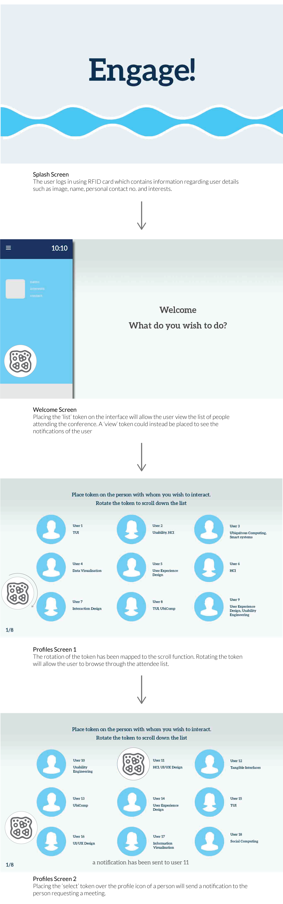
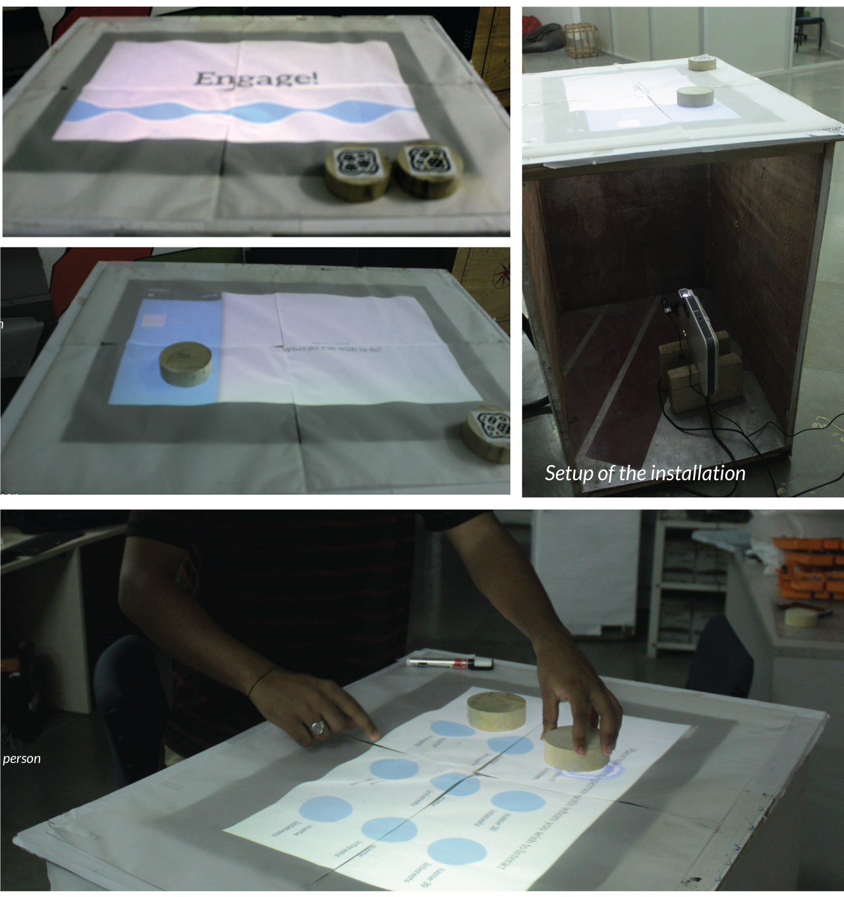

Engage!
A tangible Table-top Interface for
enhancing interaction in conferences
Academic Project: Tangible User Interfaces
Overview
The goal of this project was to increase social interactions between people within a conference environment. Plenty of people who attend conferences for their first time are often shy or hesitant to openly interact with people. Thus, they fail to take advantage of the networking opportunity that such conferences provide.
Our solution attempts to overcome this by providing people with the necessary stimulus which could act as an icebreaker, and help initiate conversation. The system uses unique RFIDs to store user information such as name, contact and interests and allows the user to express an intent to interact with another researcher, who is then notified. We created a working prototype of the same which uses fiducial embedded tokens to interact with the system which was built on Processing.
Project Details
Duration
March 2015 - April 2015
Tools Used
Photoshop, Illustrator Processing, TUIO Library
Team
Abhraneel Sarma
Sidhant Goyal
Abhushek Sharma
Role
We worked in a team of three members for the project and were jointly involved in conceptualizing and setting up the installation. I was responsible for programming in Processing.
Outcome
We were able to prototype an interface which would collect the information from the RFID and store the information with whom the user wishes to connect with in a database, and then automatically send out that information as a text message.
Research
User Goals (from a conference)
We conducted a short in-person interview of 7 people within the university. Based on these interviews, the target users were classified into two groups: Newbies, or those who have less (1-3) conference experience and Oldies, or those who have relatively greater conference experience (faculty members). From this survey we obtained the follwing observations.
- To see and meet the people who've written papers one has read and to see what's current in research.
- Networking. To converse with and build relationships with other researchers.
- To hear presentations: Understand what others are doing, which may inspire research ideas, and expose one to different styles of presentation.
- Discuss about one’s own work: Talking about one’s own work can provide a plenty of interesting insights from other researchers
Literature Review
We reveiwed several papers which discussed attempts to initiate social conversations between two individuals (strangers) through external stimulus. We've provided the summary of the three primary research papers which formed the basis of our concept.
Social Textiles
Wearable computing textiles which enable social messaging and peripheral social awareness on non-emissive digitally linked shirts.
Source: Kan, V., Fujii, K., Amores, J., Chang Long Zhu Jin, Maes, P., Ishii, H., Social Textiles: Social Affordances and Icebreaking Interactions Through Wearable Social Messaging (2015)
The CONFERATOR System: PeerRadar
PeerRadar focuses on the support of social person to person interactions by allowing participants to search the user list, view user profiles, list of people recently met in the conference.
Atzmueller, M., Benz, D., Doerfel, S., Hotho, A., Jaeschke, R., Macek, B. E., , Mitzla, F., Scholz, C., Stumme, G., Enhancing Social Interactions at Conferences (2010)
The Opionionizer system
A light interface with a shared display which encouraged people in a public setting, to create and display content for public viewing and encourage conversation initiation and socializing between bystanders.
Rogers, Y. & Brignull, H., Subtle ice-breaking: encouraging socializing and interaction around a large public display (2002)
Problem Definition
Need for ice-breaking in social situations
Providing the requisite context for ice-breaking
Providing the necessary stimulus to initiate conversation
Enable Conversation
Objective
To create a tangible installation for conferences which would enable easier interaction opportunities between two people who have never interacted previously.
Ideation
Concept Generation


Design
Task Flows
Development
Schematic Diagram

Setup of the prototype
Evaluation
Due to several constraints the prototype has not been evaluated yet. However, upon discussion with the interviewees, a majority of them said that they would be eager to try out such installations in HCI conferences.